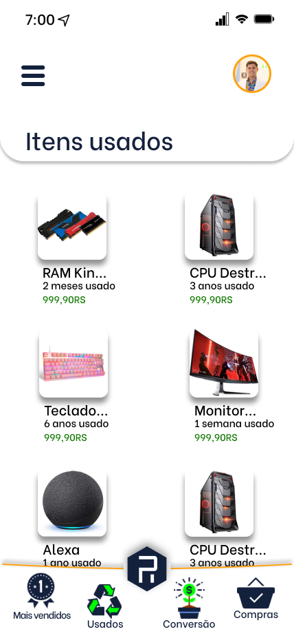

_preview_rev_1.png)
Reus-e, é um marketplace voltado para o comércio de peças de computadores usadas, seminovas ou, até mesmo, novas e prontas para uso.Seu objetivo é atender às necessidades tecnológicas do público jovem-adulto e, ao mesmo tempo, estimular a preservação do meio ambiente, uma vez querelançar produtos usados no mercado reduz o desperdício.

Converta pontos adquiridos comprando itens usados, em crédito para futuras compras!